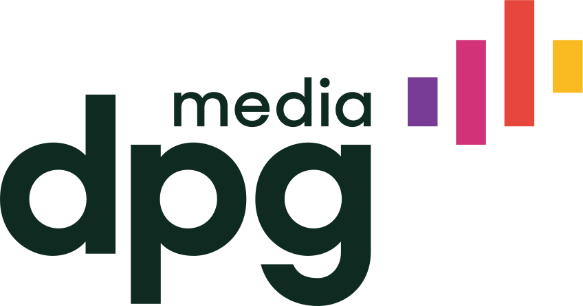
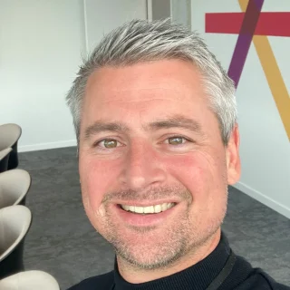

Chemie- en technologiebedrijf
2 werkweken tijdswinst
Gebruikt Youbo voor
- 370medewerkers
- 27afdelingen

Gedaan met splitsen en consolideren van spreadsheets. Bye-bye versies en errors. Meer tijd voor kwaliteit.
Je ziet een overschrijding terwijl ze ontstaat, niet wanneer de brieven al verstuurd zijn. Youbo telt elke toekenning meteen bij het budget op en kleurt de balk rood zodra de grens voorbij is, zolang er nog bijgestuurd kan worden. Geen budget slippage meer.
Meritbudget · cyclus 2027
121% · € 21.032 over budget
Help managers om consistente en eerlijkere loonbeslissingen te nemen. Met automatische suggesties volgens loonbanden, prestatiescores, budgetten en andere parameters. Wat jij verkiest.
€ 3.813,36 € 4.053,55 + € 240,19 · + 6,30%
Youbo volgt jullie loonregels, formules en goedkeuringsflows. Jij bepaalt wie wat ziet. Verandert je loonbeleid? Dan verandert Youbo mee.
Goedgekeurd
Chemie- en technologiebedrijf
2 werkweken tijdswinst
Gebruikt Youbo voor
Softwaregroep
Meerdere werkdagen bespaard
Gebruikt Youbo voor
Infrastructuur- en logistiekgroep
Live op 3 maanden
Gebruikt Youbo voor
Hr-dienstverlener
Van 2 maanden naar 3 weken
Gebruikt Youbo voor
Mediagroep
7x sneller bestanden klaar
Gebruikt Youbo voor
Elke manager ziet zijn team, vergelijkt medewerkers en onderzoekt uitschieters. Hij neemt loonvoorstellen over of past ze aan binnen de afgesproken marges.
Beheer de budgetten voor loonsverhoging, bonus en promoties afzonderlijk. Je ziet realtime de impact van elke beslissing. Geef directie en finance een helder overzicht op elk budget.
In een oogopslag zie je welke managers hun review al hebben afgerond en waar nog actie nodig is.
Gepersonaliseerd en klaar om te versturen wanneer je wil. Geen mailmerge meer.
TODO — te bevestigen: de vier schermen zijn nagetekend met eigen, sluitende voorbeeldcijfers uit één demodataset, omdat het bestaande hero-scherm van youbo.io dezelfde medewerker op twee verschillende bedragen zet. Zodra er toegang is tot de app vervangen we ze door echte schermen met geanonimiseerde data
Start nu: ontdek loonverschillen en werk ze tijdig weg. Bewijs dat elke loonbeslissing consequent is. Genereer vlot de rapporten die Europa vraagt.
Sales · loonband 14
− 2,1% · € 90 per maand
Youbo past in elk hr-landschap en haalt zijn gegevens uit de systemen die je al gebruikt. Connecteer makkelijk met elke tool, van prestatiemanagement tot payroll.
“Dankzij Youbo hebben we onze budget slippage volledig weggewerkt in amper 2 cycli.”
“Toen ik een demo zag, wist ik: hier hebben we op gewacht.”

“Youbo helpt om de loonkloof weg te werken.”
“Dankzij Youbo is de interne billijkheid toegenomen. Door de transparantie voer ik nu betere inhoudelijke gesprekken met mijn team.”

Joris Valkenborgh Team manager“Als Youbo morgen zou verdwijnen, zouden we vooral het overzicht missen. In één klik zien we de jaarkost en het totale loonpakket van de werknemer.”
Samen met een vaste contactpersoon stemmen we Youbo af op je loonbeleid, laden we je data in en leiden we je managers op. Tussen het eerste contact tot de eerste beloningsronde verloopt er gemiddeld 10 tot 12 weken, afhankelijk van de omvang van je organisatie en de complexiteit van je loonbeleid. Daarna kun je zelfstandig aan de slag. Je kan de configuratie aanpassen wanneer je loonbeleid verandert. Je vaste contactpersoon blijft beschikbaar voor ondersteuning. Tijdens de demo krijg je een concreet zicht op de timing voor jouw organisatie.
Ja. Het budget kan fijnmazig worden opgesplitst over zoveel niveaus als gewenst. De tool is inzetbaar in meerdere landen, werkt met verschillende munteenheden en is beschikbaar in de meest courante talen.
Youbo past zich aan jouw organisatie aan, niet andersom. Youbo neemt complexe regels en formules van jullie loonbeleid over. We vertrekken vanuit de vraag: hoe wil jullie organisatie haar loonbeleid uitvoeren? Vervolgens modelleren we de software volgens die behoefte.
Jullie organisatiestructuur, loonregels, goedkeuringsflows en gewenste verantwoordelijkheden zijn het uitgangspunt. Mogen budgetten worden overschreden? Is het budget fixed of een percentage van de loonmassa? In welke mate kan een manager afwijken? Welke data kunnen de managers zien? Jij kiest, Youbo voert uit.
Youbo past de regels consequent toe, bewaakt afwijkingen en maakt verschillen inzichtelijk en verantwoordbaar. Elke loonbeslissing met Youbo is overwogen, onderbouwd én traceerbaar. Daardoor helpt Youbo je om te beantwoorden aan de Europese loontransparantierichtlijn en bij rapportering en audits.
Youbo sluit aan op je bestaande hr-tools, zoals SAP SuccessFactors of Workday. Die ondersteunen ook compensatiemanagement, maar Youbo is er specifiek voor ontwikkeld. Daardoor kun je je beloningsproces flexibeler inrichten en vlotter beheren. Youbo gebruikt de data uit je bestaande systemen en connecteert vlot met elke tool in je hr-landschap.
De prijs hangt af van de omvang van je organisatie en de gewenste ondersteuning. Je betaalt een eenmalige opstartkost en een jaarlijkse licentie. Tijdens de demo bespreken we je behoeften en maken we een voorstel op maat.
Nick Van Langendonck luistert graag naar jouw vragen. Laat je gegevens na en hij contacteert je.
We gebruiken cookies om het bezoek aan deze pagina te meten en de pagina te verbeteren.
Nick toont je Youbo voor jouw looncyclus